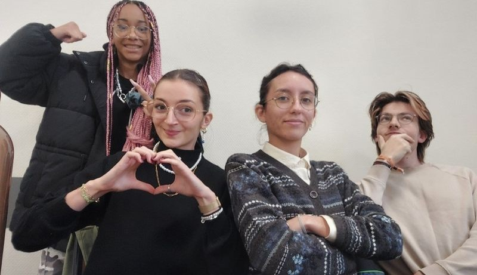

La création de l'Agence
C’est en 2016, lors d’un congrès sur l’évolution psychique, que nos quatre coachs se sont rencontrés pour la première fois. Deux mois après cette réunion, que Matthias qualifie de « signe du destin », ils ont lancé leur commerce. C’est ainsi que le 26 avril 2016 est apparue l’Agence, née d’une envie commune des coachs de partager leur savoir faire et de rendre les humains meilleurs. Le but derrière la création de cette société est de centraliser en un seul et même site toutes les solutions aux problèmes que chacun rencontre, que ce soit sur le plan émotionnel, astral, physique ou mental.
